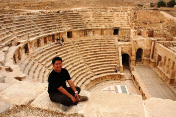
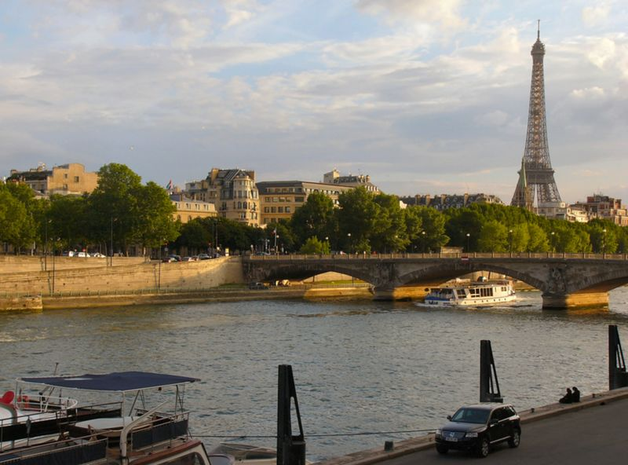
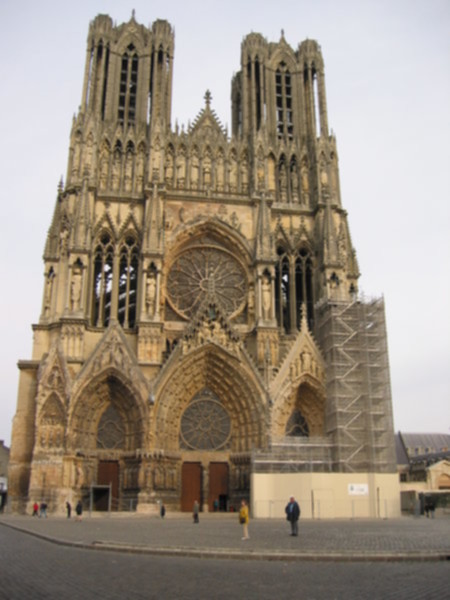
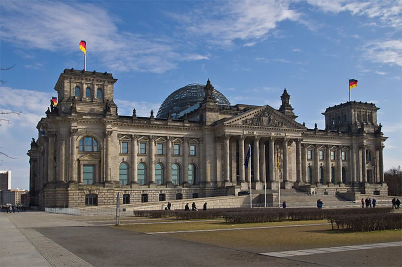
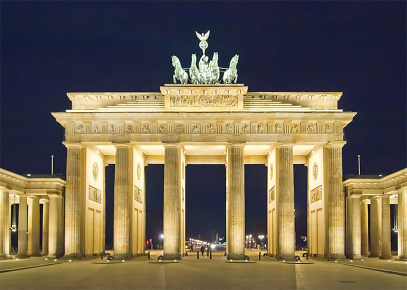
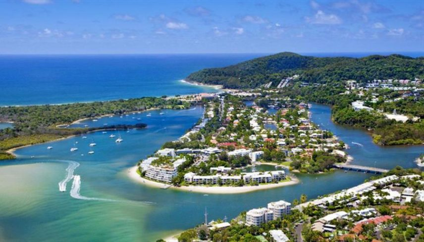
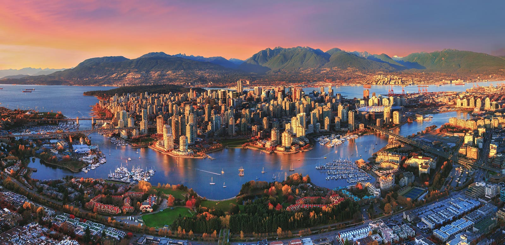
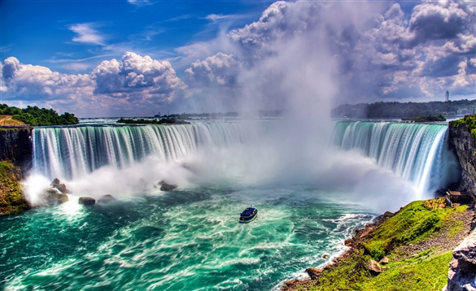
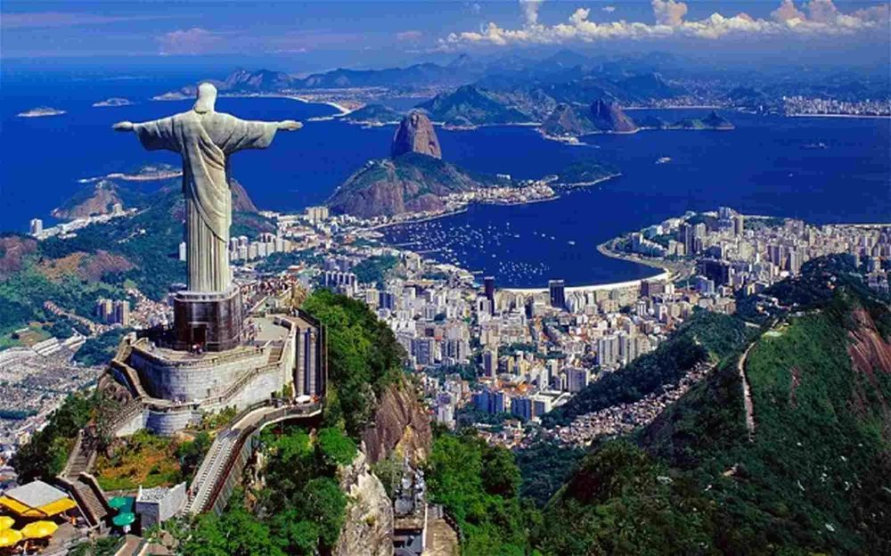
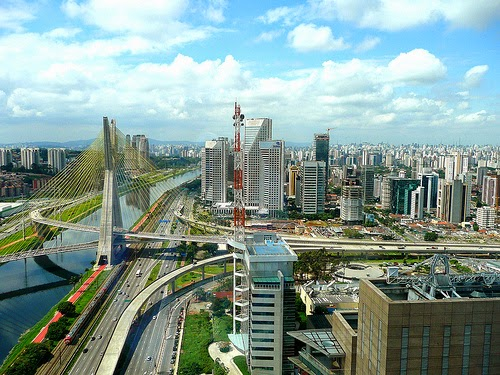

Author

James Pham has spent the last 20 years being a citizen of the world. Work and travel has taken him from his hometown in Fairfax, Virginia to Canada, Cambodia, Thailand, and now Vietnam, with stops in about 50 countries along the way. He has a background in publishing and educational management, but his guilty pleasure.
Read more...
 obsessive travel planning. He spends way more of his savings on travel than is reasonable.
After a 10 week overland photographic safari in Africa in 2010 and a 12 week trip around the world in 2011, James is currently taking time off to write and explore his native Vietnam.
obsessive travel planning. He spends way more of his savings on travel than is reasonable.
After a 10 week overland photographic safari in Africa in 2010 and a 12 week trip around the world in 2011, James is currently taking time off to write and explore his native Vietnam.
obsessive travel planning. He spends way more of his savings on travel than is reasonable.
After a 10 week overland photographic safari in Africa in 2010 and a 12 week trip around the world in 2011, James is currently taking time off to write and explore his native Vietnam.

France is a country with which almost every traveler has a relationship. Many dream of its joie de vivre shown by the countless restaurants, picturesque villages and world-famous gastronomy. Some come to follow the trail of France's great philosophers, writers and artists, or to immerse in the beautiful language it gave the world. And others still are drawn to the country's geographical diversity with its long coastlines, massive mountain ranges and breathtaking farmland vistas. Read more...
France has been the world's most popular tourist destination for quite some time. It received 83.7 million visitors in 2014, although these figures are highly skewed by the number of people who frequent the country for the weekend, particularly to visit Disneyland Paris, Europe's most popular visitor attraction. France is one of the most geographically diverse countries in Europe, containing areas as different from each other as urban chic Paris, the sunny French Riviera, long Atlantic beaches, the winter sports resorts of the French Alps, the castles of the Loire Valley, rugged Celtic Brittany and the historian's dream that is Normandy.
France is a country of rich emotions and turbulent politics but also a place of rational thinking and Enlightenment treasures. Above all, it is renowned for its cuisine, culture and history.
In the Caribbean, France borders the Netherlands via the French territory of Saint-Martin which borders the Dutch territory of Sint Maarten. Five oversea regions also form part of France: Martinique and Guadeloupe in the Caribbean, French Guiana in South America , and Reunion and Mayotte, both off the coast of Madagascar. Numerous French oversea territories also exist around the Earth with varying status.

Germany is the largest country in Central Europe. It is bordered to the north by Denmark, to the east by Poland and the Czech Republic, to the south by Austria and Switzerland, and to the west by France, Luxembourg, Belgium and the Netherlands. Germany is a federation of 16 states, roughly corresponding to regions with their own distinct and unique cultures. Read more...
Germany is one of the most influential European nations culturally, and one of the world's main economic powers. Known around the world for its precision engineering and high-tech products, it is equally admired by visitors for its old-world charm and "Gemütlichkeit" (coziness). If you have perceptions of Germany as simply homogeneous, it will surprise you with its many historical regions and local diversity.

Australia is world famous for its natural wonders and wide open spaces, its beaches, deserts, "the bush", and "the Outback".
Australia is one of the world's most highly urbanized countries; it is well known for the attractions of its large cities such as Sydney, Melbourne, Brisbane, Perth. Read more...
 Australia is the sixth-largest country by land area. It is comparable in size to the 48 contiguous United States Australia is bordered to the west by the Indian Ocean, and to the east by the South Pacific Ocean. The Tasman Sea lies to the southeast, separating it from New Zealand, while the Coral Sea lies to the northeast. Papua New Guinea, East Timor and Indonesia are Australia's northern neighbors, separated from Australia by the Arafura Sea and the Timor Sea.
Australia is highly urbanized with most of the population heavily concentrated along the eastern and south-eastern coasts. Most of the inland areas of the country are semi-arid. The most-populous states are Victoria and New South Wales, but by far the largest in land area is Western Australia.
Australia has an area of 7,682,300km² (2,966,152 square miles) and the distances between cities and towns are easy to underestimate. The Government has published a National Public Toilet Map.
Australia has large areas that have been deforested for agricultural purposes, but many native forest areas survive in extensive national parks and other undeveloped areas. Long-term Australian concerns include salinity, pollution, loss of biodiversity, and management and conservation of coastal areas, especially the Great Barrier Reef.
Australia is the sixth-largest country by land area. It is comparable in size to the 48 contiguous United States Australia is bordered to the west by the Indian Ocean, and to the east by the South Pacific Ocean. The Tasman Sea lies to the southeast, separating it from New Zealand, while the Coral Sea lies to the northeast. Papua New Guinea, East Timor and Indonesia are Australia's northern neighbors, separated from Australia by the Arafura Sea and the Timor Sea.
Australia is highly urbanized with most of the population heavily concentrated along the eastern and south-eastern coasts. Most of the inland areas of the country are semi-arid. The most-populous states are Victoria and New South Wales, but by far the largest in land area is Western Australia.
Australia has an area of 7,682,300km² (2,966,152 square miles) and the distances between cities and towns are easy to underestimate. The Government has published a National Public Toilet Map.
Australia has large areas that have been deforested for agricultural purposes, but many native forest areas survive in extensive national parks and other undeveloped areas. Long-term Australian concerns include salinity, pollution, loss of biodiversity, and management and conservation of coastal areas, especially the Great Barrier Reef.
Australia is the sixth-largest country by land area. It is comparable in size to the 48 contiguous United States Australia is bordered to the west by the Indian Ocean, and to the east by the South Pacific Ocean. The Tasman Sea lies to the southeast, separating it from New Zealand, while the Coral Sea lies to the northeast. Papua New Guinea, East Timor and Indonesia are Australia's northern neighbors, separated from Australia by the Arafura Sea and the Timor Sea.
Australia is highly urbanized with most of the population heavily concentrated along the eastern and south-eastern coasts. Most of the inland areas of the country are semi-arid. The most-populous states are Victoria and New South Wales, but by far the largest in land area is Western Australia.
Australia has an area of 7,682,300km² (2,966,152 square miles) and the distances between cities and towns are easy to underestimate. The Government has published a National Public Toilet Map.
Australia has large areas that have been deforested for agricultural purposes, but many native forest areas survive in extensive national parks and other undeveloped areas. Long-term Australian concerns include salinity, pollution, loss of biodiversity, and management and conservation of coastal areas, especially the Great Barrier Reef.

Canada is by size, the largest country in North America, second in the world overall (behind only Russia). Renowned worldwide for its vast, untouched landscape, its blend of cultures and multifaceted history, Canada is one of the world's wealthiest countries and a major tourist destination. Read more...
Canada is a land of vast distances and rich natural beauty. Economically and technologically, and in many other ways she closely resembles her neighbor to the south, the United States, although there are significant differences between the two countries. While both countries have a long and continuing history of colonialism over the Indigenous people of their countries, Canada is perfectly happy with its British heritage and many Canadians are proud of this. Much of Canada's current built environment and influence has come primarily from immigrants from two European nations, Britain and France. This dual nature is very different than in the United States, and in some parts of Canada, particularly Quebec and parts of New Brunswick, Canadians primarily speak French. Canada became a self-governing dominion in 1867 by an act of the British parliament, and is still a proud member of the Commonwealth of Nations. By 1931 it was more or less fully independent of the United Kingdom, although true independence did not occur until 1982. Canada's past and ongoing colonialism is still of some contention between Indigenous people, Canadians, and the Canadian government. Though a medium-sized country by its population (35 million), Canada has earned respect on the international stage for its strong diplomatic skills, peacekeeping efforts, and respect for human rights. Canadians generally enjoy a very high quality of life - Canada consistently scores very well on indices of economic freedom, corruption, respect for civil rights, and more. Domestically, the country has displayed some success in negotiating compromises amongst its own culturally and linguistically varied populations, a difficult task considering that language, culture, and even history can vary significantly throughout the whole country. Similarly to the United States' traditional image of itself as a melting pot, there are many different minorities from all over the world living in Canada, particularly in urban centres. Canadians are, for the most part, used to living and interacting with people of different ethnic backgrounds on a daily basis and will usually be quite friendly and understanding if approached in public. The country is largely urban-based, where peoples of all backgrounds may rub elbows with one another.

Brazil is the largest country in South America and fifth largest in the world. Famous for its football (soccer) tradition and its annual Carnaval in Rio de Janeiro, Salvador, Recife, Olinda. It is a country of great diversity, from the bustling urban mosaic of Sao Paolo to the infinite cultural energy of Alagoas, Pernambuco and Bahia, the wilderness of the Amazon rainforest and world-class landmarks such as the Iguacu Falls, there is plenty to see and to do in Brazil. Read more...
Brazil was inhabited solely by indigenous people, mainly of the Tupi and Guarani ethnic groups. Settling by the Portuguese began late in the 16th century, with the extraction of valuable wood from the pau brasil tree, from which the country draws its name. Brazil was settled by the Portuguese and not the Spanish, as were the rest of Central, South and parts of North America in the New World. Despite Portuguese rule, in some parts of Brazil the Dutch founded colonies between 1630 and 1654. They founded several cities, such as Mauritsville (now Recife, capital of the state of Pernambuco, at the edge of North-East of the country), and many sugar cane plantations. The Dutch fought a grim jungle war with the Portuguese, and without the support of the Republic of their homeland due to a war with England, the Dutch surrendered to the Portuguese, though they did not officially recognize Portuguese rule, which led to an all-out war with Portugal off the coast of Portugal in 1656. In 1665 the Peace Treaty of The Hague was signed, Portugal lost its Asian colonies and had to pay 63 tons of gold to compensate the Dutch Republic for the loss of its colony.
Brazil became the centre of the Portuguese Empire by 1808, when the King Dom João VI (John VI) fled from Napoleon's invasion of Portugal and established himself and his government in the city of Rio de Janeiro.
The following centuries saw further exploitation of the country's natural riches such as gold and rubber, alongside the rise of an economy based largely on sugar, coffee and African slave labour. Meanwhile, extermination and Christianizing of natives kept its pace, and in the 19th and 20th centuries a second wave of immigration took place, mainly Italian, German (in southern Brazil), Spanish, Japanese (in São Paulo and Paraná states), American (in São Paulo state), and Portuguese, making Brazilian culture and society complex and unique.
Following three centuries under the rule of Portugal, Brazil became an independent nation on September 7th, 1822. Until 1889 Brazil was an Empire under the rule of Dom Pedro I and his son Dom Pedro II. By this time, it became an emerging international power.
But during these three and a half centuries, Brazil was the nation in the Americas with the most widespread slavery, the first to bring African people to work by force, and the last to set them free. Due to English laws against slavery (some argue more for economic contests than humanity reasons) and fighting between white and black people, slaves and free, for abolition, slavery ended in 1888. But freedom didn't mean equality to the now-free black people and their descendants.